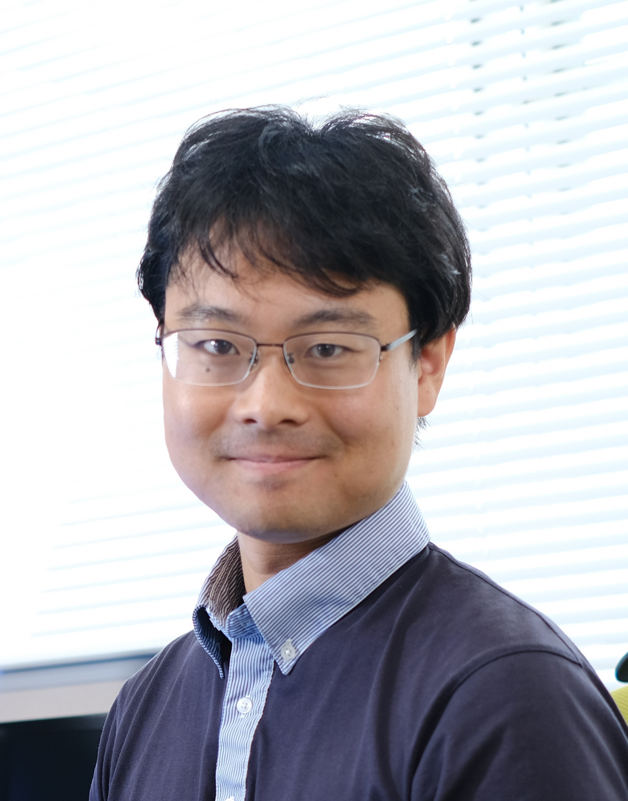

チームリーダー：大岡英史

数理触媒研究チームは、触媒を速度論で理解し、それをもとに新材料を開発することを目指しています。特に従来の量子化学計算（熱力学・エネルギー論）よりも高精度な特性予測が可能な速度論モデルを設計指針として活用することで、これまで見落とされてきた材料を発掘します。これらを通し、水素製造用の電極触媒など、今後のクリーンエネルギー技術に不可欠な材料開発をします。私個人の経歴としては、実験（分光電気化学）で学位を取得してから、自分の実験結果と全く整合性がなかった既存理論に満足できず、速度論を主軸とした理論開拓に取り組むようになりました。その過程で、理論研究に必要なPython（データの自動解析、数値シミュレーションや機械学習に役立ちます！）は独学で勉強しました。力学系解析や化学反応ネットワーク理論などの応用数理についても、ほぼ独学で学んできました。時代の流れがどんどん加速する中、また人生100年時代と言われる中、学生時代に身に着けた知識だけで生き残るのは不可能です。このため、研究室の最も大事な価値観として、常に成長し続けられることを掲げています。
学ぶこととはすなわち、新たな視点を手に入れることです。そして、そこから新たな問いを立てることができます。知的好奇心のまま、その答えを求め続けられることが、科学者であることの喜びの一つだと感じています。私の詳細な経歴にご関心がある方は、個人HPからご覧ください。
研究室員
八束 孝一（博士研究員）
研究内容：電気化学測定による速度論的反応機構の同定。
Sahaya Vijay Jeyaraj（博士研究員）
研究内容：反応機構の数理解析および予測。
高橋 浩三（技術員）
研究内容：光導波路分光法や斜入射X線回折(GI-XRD)などによる速度論的反応機構の同定。
西本 千郁（アシスタント）
担当内容：研究室運営等。